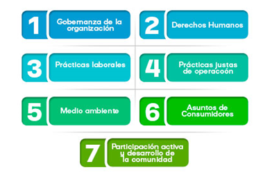
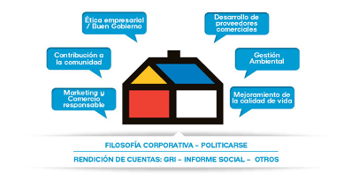

RESPONSABILIDAD SOCIAL
Desarrollamos e implementamos programas sociales de alto impacto que generar un valor agregado a lso grupos de interes con los que interactua la compañia.Mas alla del estricto cumplimiento de la ley buscamos garantizar un equilibrio entre lo flantropico y lo economico, ademas de la sonteibilidad, vinculacion y sensibilizacion de nuestros empleados y el reconocimiento por parte de nuetrros alumnos.
Estandarizacion de la compañia que busca:
- Ayudar a las organizaciones a abordar su Responsabilidad Social.
- Proporcionar una guía práctica tendiente a hacer operativa la Responsabilidad Social.
- Dar énfasis a los resultados de desempeño y a su mejor
- Aumentar la confianza y satisfacción de los clientes y otros stakeholders en las organizaciones

PROGRAMA RES:
Nuestro modelo está conformado por seis pilares de Responsabilidad
Social que agrupa las variables económicas, sociales y ambientales. Este modelo
responde a las necesidades de los grupos de interés con los interactúa en la
compañía.
2 GRANDES PILARES

MEJORAMIENTO DE CALIDAD DE VIDA:
Retribuir a la Sociedad mejores personas a través del ofrecimiento de un
trabajo digno, que desarrolle su talento y mejore su calidad de vida.
Objetivos:
- Impulsar el desarrollo
integral del empleado y su familia, promoviendo actividades con objetivo
pedagógico, manteniendo aquellas que incentiven mejoras en la calidad de
relaciones.
- Fortalecer los
vínculos entre los colaboradores con el fin de fomentar las relaciones humanas,
el trabajo en equipo y la participación.
- Mantener un estado
mental positivo en nuestros colaboradores y sus familias, con un alto sentido
de pertenencia hacia la empresa por parte de ellos.
CONTRIBUCION A LA COMUNIDAD:
Generar crecimiento, progreso y desarrollo a la sociedad que contribuya
a la construcción de un mejor país.
Por medio de programas como:
- Donaciones de vueltas.
- Donaciones en especie y dinero.
- Programa voluntariado - Soy voluntario Sodimac.
- S.O.S Solideraio.
TECHO nació en Chile en 1997, tiene presencia en 19 países de Latinoamércia y en Colombia está presente desde 2006. Su gran objetivo es la superación de la pobreza y lograr un desarrollo sostenible en las comunidades que interviene, haciendo partícipes a todos los sectores de la sociedad, a través de diferentes programas que promueven el desarrollo comunitario:
- Construcción de viviendas de emergencia.
- Fomento productivo y emprendimiento.
- Capacitación en oficios técnicos.
- Asistencia jurídica.
- Entre algunos más.
Dentro del programa "Soy voluntario Sodimac" ofrecemos cuatro modalidades para que los voluntarios puedan vincularse de acuerdo a sus intereses y afinidades:
- Reparación locativas de escuelas públicas.
- Adecuación de viviendas, colegios y jardines, eliminando barreras de acceso para que las personas en condición de discapacidad puedan acceder.
- Soluciones temporales de vivienda.
- Jornadas ambientales de siembre de árboles.